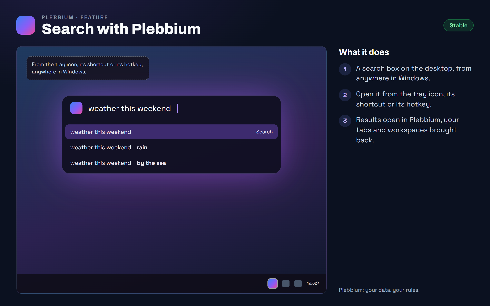

All features › Shipped › Search with Plebbium
Search with Plebbium
Stablesince 3604Search from anywhere in Windows: Plebbium's tray icon, its shortcut or its hotkey opens a search box on the desktop, dark glass with the start window's glow.

How to use it
- Click Plebbium's tray icon, or open the Search with Plebbium shortcut.
- Type and press Enter: the result opens in Plebbium, your last session restored first.
When it arrived
156.0.8078.360418 Oct 2026 · Beta and Stable
Search with Plebbium.
156.0.8078.3609Beta 20 Oct 2026 · Stable 22 Oct 2026 (3612)
Search with Plebbium in the start window's look.
Why it works this way
Chromium's own, in Plebbium's look
It is Chromium's own desktop search, restyled: always dark, like the start window, with the Plebbium logo. How it searches is untouched.
Plebbium keeps running
With it on, closing every window isn't quitting: Plebbium waits in the tray, and a search brings back your session and its workspaces.